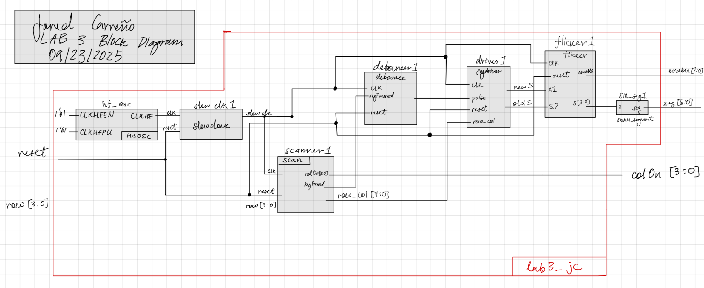
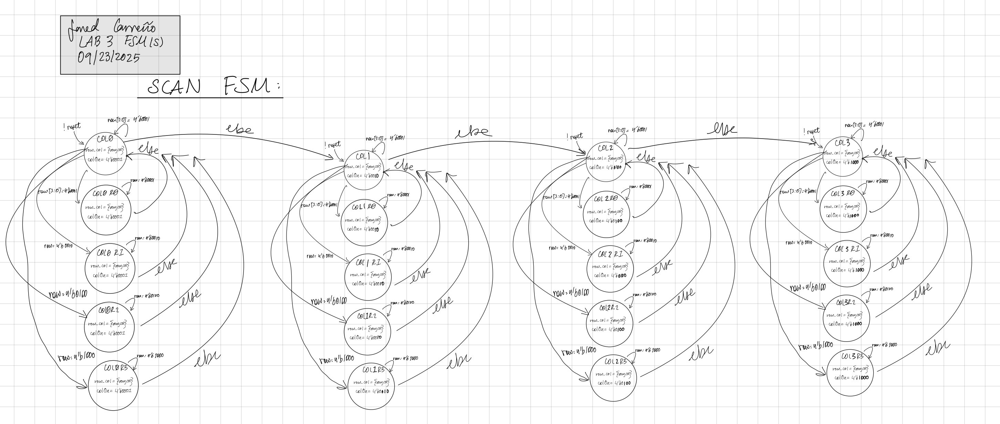
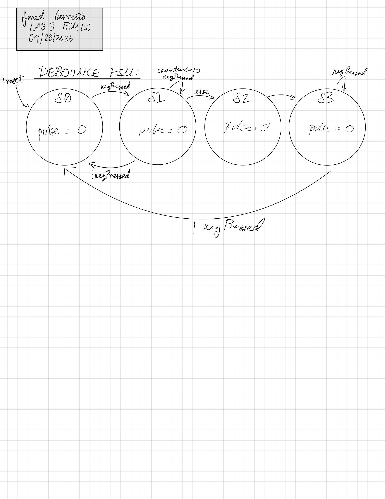
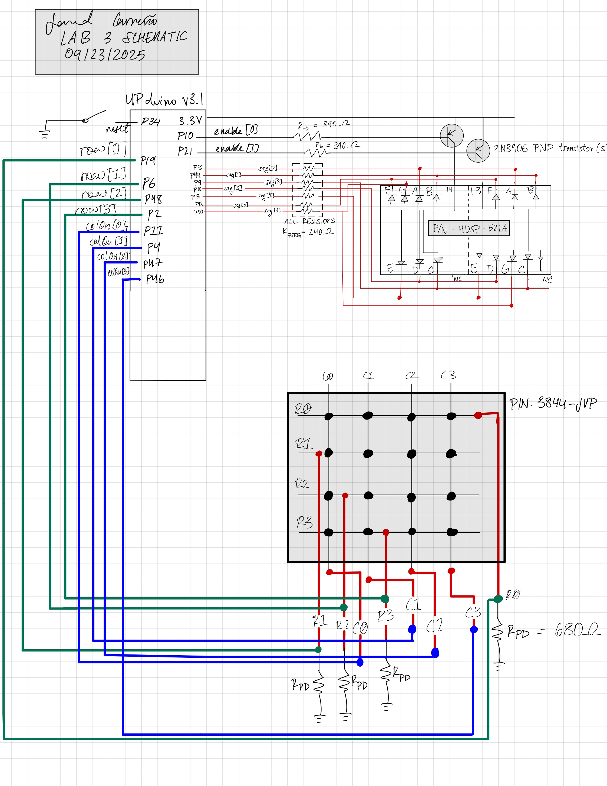

Lab 3
Introduction
Design and Testing Methodology
Technical Documentation:
The Git repository containing the source code of this lab can be found here: Lab 3 Repo.
Block Diagram and FSMs



Schematic

Results and Discussion
Conclusion
AI Prototype Summary
```module clock_divider( input logic clk, // 20 MHz input clock input logic rst_n, // Active low reset output logic scan_clk // Divided clock (100–200 Hz) ); // Target clock frequency: 100 Hz // Divider for 20 MHz: 20 MHz / 100 Hz = 200,000 logic [18:0] counter; // 19-bit counter for clock division
always_ff @(posedge clk or negedge rst_n) begin
if (!rst_n) begin
counter <= 0;
scan_clk <= 0;
end else begin
if (counter == 199_999) begin
counter <= 0;
scan_clk <= ~scan_clk; // Toggle scan clock
end else begin
counter <= counter + 1;
end
end
endendmodule
module keypad_scanner1( input logic clk, // Clock input (scan clock) input logic rst_n, // Active low reset input logic [3:0] rows, // Row signals (active low) output logic [3:0] cols, // Column signals (active low) output logic [3:0] key // Output the detected key (hex value) ); // State machine for scanning rows and columns typedef enum logic [1:0] { IDLE = 2’b00, SCAN = 2’b01, DEBOUNCE = 2’b10 } state_t;
state_t state, next_state;
logic [3:0] column_reg, last_cols;
logic [3:0] key_reg, last_key;
logic key_pressed;
always_ff @(posedge clk or negedge rst_n) begin
if (!rst_n) begin
state <= IDLE;
cols <= 4'b1111; // All columns inactive
key_reg <= 4'b0000;
last_cols <= 4'b1111;
end else begin
state <= next_state;
end
end
// State machine logic
always_ff @(state or column_reg or rows or last_cols) begin
case (state)
IDLE: begin
next_state = SCAN;
cols = 4'b1111; // All columns inactive
end
SCAN: begin
// Cycle through columns, one active at a time
if (column_reg == 4'b1110) column_reg = 4'b1101;
else if (column_reg == 4'b1101) column_reg = 4'b1011;
else if (column_reg == 4'b1011) column_reg = 4'b0111;
else column_reg = 4'b1111;
cols = column_reg; // Set current column
key_pressed = |(rows & ~cols); // Detect key press based on row signals
if (key_pressed) begin
key_reg = rows; // Register key press based on row active
next_state = DEBOUNCE;
end else begin
next_state = SCAN;
end
end
DEBOUNCE: begin
// Debounce the key by ensuring release before registering new key
if (~|(rows & ~cols)) begin // No key pressed
next_state = SCAN;
end else begin
next_state = DEBOUNCE;
end
end
default: next_state = IDLE;
endcase
end
// Output the detected key
always_ff @(posedge clk) begin
if (key_pressed) key = key_reg;
else key = last_key;
endendmodule
module keypad_one_shot_registration( input logic clk, // Clock input input logic rst_n, // Active low reset input logic [3:0] rows, // Row signals from keypad (active low) output logic new_key, // Single-cycle pulse for new key press output logic [3:0] key_code // Detected key code (hex value) ); // State machine states typedef enum logic [1:0] { IDLE = 2’b00, PRESSED = 2’b01, RELEASED = 2’b10 } state_t;
state_t state, next_state; // Current and next states
logic [3:0] last_key; // Store the last detected key
logic [3:0] current_key; // Store the current key being pressed
// Key detection: any active row means a key is pressed
always_ff @(posedge clk or negedge rst_n) begin
if (!rst_n) begin
state <= IDLE;
new_key <= 0;
last_key <= 4'b0000;
key_code <= 4'b0000;
end else begin
state <= next_state;
end
end
// Logic for key detection (rows are active low, check if any row is pressed)
always_ff @(posedge clk) begin
if (state == IDLE && ~(|rows)) begin
// Detect the key code when a key is pressed (active low rows)
current_key <= ~rows;
end
end
// State transition and new key pulse generation
always_ff @(posedge clk) begin
case (state)
IDLE: begin
if (~(|rows)) begin // Detect key press (any active row)
next_state <= PRESSED;
new_key <= 1; // Generate a one-shot pulse
end else begin
next_state <= IDLE;
new_key <= 0; // No new key, reset pulse
end
end
PRESSED: begin
if (~(|rows)) begin // Key is still pressed
next_state <= PRESSED;
new_key <= 0; // No new key until key is released
end else begin
next_state <= RELEASED; // Key released, move to RELEASED state
end
end
RELEASED: begin
if (~(|rows)) begin // Key press has been released
next_state <= IDLE;
key_code <= current_key; // Capture the key code
last_key <= current_key;
end else begin
next_state <= RELEASED;
end
end
default: begin
next_state <= IDLE;
end
endcase
endendmodule
module keypad_scanner2( input logic clk, // Clock input (divided clock) input logic rst_n, // Active low reset input logic [3:0] rows, // Row signals from keypad (active low) output logic [3:0] key_code, // Detected key code (4-bit hex value) output logic key_pressed // Boolean indicating key press status );
// Define FSM states
typedef enum logic [1:0] {
SCAN_IDLE = 2'b00, // Wait for key press
SCAN_COL_0 = 2'b01, // Scan column 0
SCAN_COL_1 = 2'b10, // Scan column 1
SCAN_COL_2 = 2'b11 // Scan column 2
} state_t;
state_t state, next_state; // Current and next states
logic [3:0] col_mask; // Column select mask
logic [3:0] detected_key; // Detected key code (4 bits)
// State machine for scanning columns
always_ff @(posedge clk or negedge rst_n) begin
if (!rst_n) begin
state <= SCAN_IDLE;
col_mask <= 4'b1111; // All columns inactive initially
end else begin
state <= next_state;
end
end
// Column scanning logic: one column is active (low) at a time
always_ff @(posedge clk) begin
case (state)
SCAN_IDLE: begin
col_mask <= 4'b1111; // No column active
end
SCAN_COL_0: begin
col_mask <= 4'b1110; // Only column 0 is active (low)
end
SCAN_COL_1: begin
col_mask <= 4'b1101; // Only column 1 is active (low)
end
SCAN_COL_2: begin
col_mask <= 4'b1011; // Only column 2 is active (low)
end
default: begin
col_mask <= 4'b1111; // Default: no column active
end
endcase
end
// Detect the key code based on the active column and row signals
always_ff @(posedge clk) begin
case (state)
SCAN_COL_0: begin
if (~rows[0]) detected_key <= 4'b0001; // Row 0, Column 0
else if (~rows[1]) detected_key <= 4'b0100; // Row 1, Column 0
else if (~rows[2]) detected_key <= 4'b0111; // Row 2, Column 0
else if (~rows[3]) detected_key <= 4'b1000; // Row 3, Column 0
end
SCAN_COL_1: begin
if (~rows[0]) detected_key <= 4'b0010; // Row 0, Column 1
else if (~rows[1]) detected_key <= 4'b0101; // Row 1, Column 1
else if (~rows[2]) detected_key <= 4'b0110; // Row 2, Column 1
else if (~rows[3]) detected_key <= 4'b1001; // Row 3, Column 1
end
SCAN_COL_2: begin
if (~rows[0]) detected_key <= 4'b0011; // Row 0, Column 2
else if (~rows[1]) detected_key <= 4'b0110; // Row 1, Column 2
else if (~rows[2]) detected_key <= 4'b0111; // Row 2, Column 2
else if (~rows[3]) detected_key <= 4'b1011; // Row 3, Column 2
end
default: detected_key <= 4'b0000; // Default: no key detected
endcase
end
// Key press indicator: Any key pressed when one of the rows is active
always_ff @(posedge clk) begin
if (~(|rows)) // If any row is active, a key is pressed
key_pressed <= 1'b1;
else
key_pressed <= 1'b0;
end
// Output the detected key code
always_ff @(posedge clk) begin
key_code <= detected_key;
end
// State machine transitions: cycle through the columns
always_ff @(posedge clk) begin
case (state)
SCAN_IDLE: next_state <= SCAN_COL_0;
SCAN_COL_0: next_state <= SCAN_COL_1;
SCAN_COL_1: next_state <= SCAN_COL_2;
SCAN_COL_2: next_state <= SCAN_IDLE;
default: next_state <= SCAN_IDLE;
endcase
endendmodule
module top_level ( input logic clk, // Clock from internal oscillator input logic rst_n, // Active low reset input logic [3:0] rows, // Row signals from keypad (active low) output logic [6:0] seg_a, // Seven segment display segments for first digit output logic [6:0] seg_b, // Seven segment display segments for second digit output logic an0, // Enable signal for first digit output logic an1 // Enable signal for second digit );
// Signals for keypad scanner and one-shot registration
logic [3:0] key_code; // Detected key code
logic new_key; // New key detected (one-shot signal)
logic key_pressed; // Key pressed indicator
// Signals for last two keys
logic [3:0] most_recent_key; // Most recent key (new key)
logic [3:0] older_key; // Older key (last key)
// Signals for 7-segment display
logic [3:0] display_digit; // Digit to be displayed on the multiplexed display
logic mux_select; // Multiplexer to select which digit to display
// Instantiate the keypad scanner
keypad_scanner2 scanner (
.clk(clk),
.rst_n(rst_n),
.rows(rows),
.key_code(key_code),
.key_pressed(key_pressed)
);
// Instantiate the keypad one-shot registration module
keypad_one_shot_registration one_shot (
.clk(clk),
.rst_n(rst_n),
.rows(rows),
.new_key(new_key),
.key_code(key_code)
);
// Process for shifting the last two keys (older <- most recent; most recent <- new)
always_ff @(posedge clk or negedge rst_n) begin
if (!rst_n) begin
most_recent_key <= 4'b0000;
older_key <= 4'b0000;
end else if (new_key) begin
// Shift the keys when a new key is detected
older_key <= most_recent_key;
most_recent_key <= key_code;
end
end
// Clock divider logic to generate a slower clock for display multiplexing
logic clk_display;
reg [15:0] clk_divider; // Divider for the clock (adjust for desired multiplexing rate)
always_ff @(posedge clk or negedge rst_n) begin
if (!rst_n) begin
clk_divider <= 16'b0;
clk_display <= 0;
end else begin
// Divide the clock to get a slower rate (e.g., 60 Hz for multiplexing)
if (clk_divider == 16'd49999) begin // Adjust this value for desired rate
clk_divider <= 16'b0;
clk_display <= ~clk_display; // Toggle the display clock
end else begin
clk_divider <= clk_divider + 1'b1;
end
end
end
// Multiplexed display logic: alternate between displaying the two digits
always_ff @(posedge clk_display or negedge rst_n) begin
if (!rst_n) begin
mux_select <= 0;
display_digit <= 4'b0000;
an0 <= 1;
an1 <= 0;
end else begin
if (mux_select) begin
display_digit <= most_recent_key;
an0 <= 0;
an1 <= 1; // Enable second digit
end else begin
display_digit <= older_key;
an0 <= 1; // Enable first digit
an1 <= 0;
end
mux_select <= ~mux_select; // Toggle between the two digits
end
end
// Instantiate the seven-segment display decoder for both digits
seven_segment seg1(
.in(display_digit),
.out(seg_a)
);
seven_segment seg2(
.in(display_digit),
.out(seg_b)
);endmodule